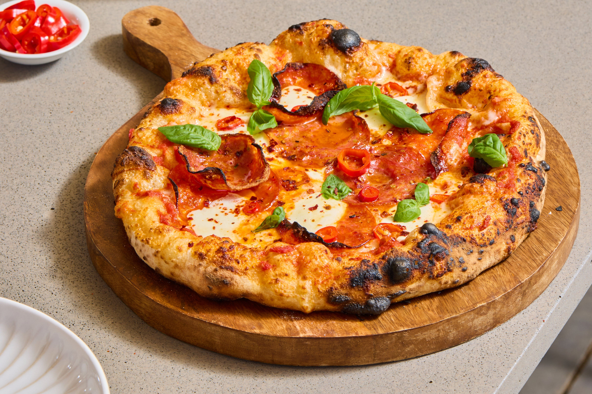

Diavola pizza is a celebrated staple of Italian cuisine, famous for its bold, fiery flavor profile that directly translates to "devil's style" pizza. Originating in Italy, this classic pie features a thin, crispy crust topped with a vibrant tomato sauce, creamy mozzarella cheese, and spicy Italian salami—traditionally soppressata calabrese or salame piccante. To elevate the heat, pizzaiolos often add crushed red pepper flakes, sliced chili peppers, or a drizzle of spicy chili oil. The combination of rich, melting cheese and the sharp, savory kick of cured meat creates a deeply satisfying balance, making it a global favorite for those who appreciate a spicy twist on traditional pizza.
